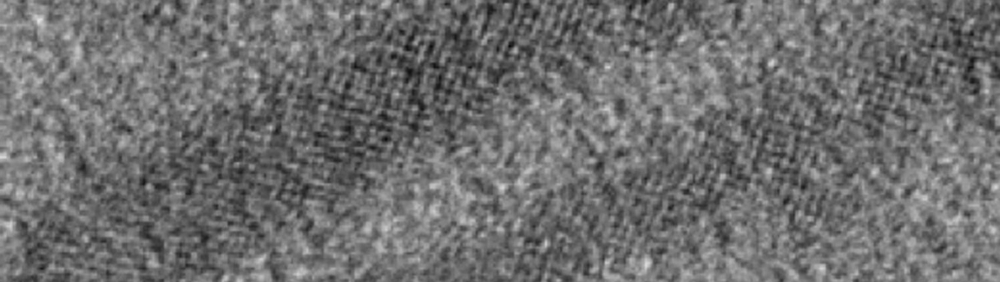

James Hoefelmeyer
Inorganic Chemistry, Materials Chemistry
Group Website:
Bulky Lewis acid - bulky Lewis base pairs are unable to neutralize via the formation of intramolecular or intermolecular dative bonds, and are known as frustrated Lewis pairs. Despite the initial frustrated state, the Lewis centers may react with less bulky molecules. Frustrated Lewis pairs induce bond polarization or heterolytic bond dissociation in small molecules. This was effectively demonstrated in Prof. Doug Stephan's classic papers in which H2 molecules heterolytically dissociate on borane-phosphine frustrated Lewis pairs. The discovery sparked intense interest in frustrated Lewis pairs. Computational studies even suggest the highly stable C-H bonds in methane can be activated on highly pre-organized Lewis centers.
One of the greatest challenges of the 21st century is to meet rapidly increasing energy demand with clean, abundant sources. Sunlight can meet this demand through energy conversion steps (light to electrical and light to chemical fuel, for example). In natural photosynthesis in green plants and algae, absorption of energy from sunlight drives endothermic chemical reaction steps that yield reducing and oxidizing equivalents in the cell with the result of effectively storing energy as chemical fuel (carbohydrate). Artificial photosynthesis schemes have been developed that achieve similar energy conversions, such as water-splitting to H2 and O2. We are developing new artificial photosynthesis materials based on nanocrystals.
Rod shape anatase TiO2 nanocrystals can be prepared easily in multi-gram quantities according to the procedure reported by the Hyeon group. The nanocrystals are an ideal platform for the design of photoelectrochemical catalysts for artificial photosynthesis. TiO2 is earth-abundant (low-cost), non-toxic, very stable, and can be prepared in over a wide range of sizes and shapes. However, issues of visible light absorption and slow catalysis at the surface must be overcome. We are studying three routes to simultaneously modify the surface and electronic structure of TiO2 nanocrystals: metal ion adsorption, doping, and selective nucleation nanocrystals on the TiO2 surface. With the use of this synthetic toolbox, our goal is to develop active, robust, inexpensive photocatalyst materials for artificial photosynthesis.